Introducción e historia
Las mediciones bioeléctricas son uno de los pilares de la instrumentación biomédica y de la práctica clínica moderna. La información funcional que aportan difícilmente se obtiene por otros medios.
¿Por qué medimos biopotenciales?
El ECG permite diagnosticar arritmias, isquemia e infarto, alteraciones electrolíticas y trastornos de conducción; el EEG es central en epilepsia, sueño y monitorización anestésica; el EMG y los estudios de conducción nerviosa distinguen entre enfermedades neuropáticas y miopáticas; el EOG y el ERG evalúan la función ocular y retiniana. Hoy estas señales alimentan además dispositivos portátiles, interfaces cerebro-computadora, prótesis mioeléctricas y algoritmos de inteligencia artificial, lo que vincula el tema con el procesamiento de señales, la salud digital y la biomecatrónica.
Breve reseña histórica
El estudio formal de la bioelectricidad nace con Luigi Galvani (1791), quien observó contracciones en ancas de rana y las interpretó como "electricidad animal". Alessandro Volta atribuyó el fenómeno al contacto entre metales disímiles, lo que lo llevó a inventar la pila voltaica. La controversia dio origen a dos disciplinas: la electrofisiología y la ingeniería eléctrica. En el siglo XIX, Matteucci y Du Bois-Reymond registraron corrientes de lesión y el potencial de acción; en 1887 Augustus Waller obtuvo el primer ECG humano, y en 1901 Willem Einthoven desarrolló el galvanómetro de cuerda (Nobel 1924). Hans Berger publicó el primer EEG humano en 1929, y en 1952 Hodgkin y Huxley presentaron su modelo cuantitativo del potencial de acción (Nobel 1963).
Origen celular de los biopotenciales
Los biopotenciales son producto de la actividad electroquímica de las células excitables de los tejidos nervioso, muscular y glandular. En reposo mantienen un potencial estable; al estimularse generan un potencial de acción.
2.1 La membrana celular y los gradientes iónicos
La membrana es una bicapa lipídica de 7 a 10 nm de espesor que actúa como dieléctrico, con una capacitancia específica cercana a 1 µF/cm². En ella se embeben canales iónicos selectivos y bombas. La bomba de sodio-potasio (Na⁺/K⁺-ATPasa) expulsa tres Na⁺ e introduce dos K⁺ por cada ATP, manteniendo alto el K⁺ interior y alto el Na⁺ exterior.
| Ion | Extracelular (mM) | Intracelular (mM) | E de Nernst a 37 °C (mV) |
|---|---|---|---|
| Na⁺ | 145 | 12 | +66.6 |
| K⁺ | 4 | 155 | −97.7 |
| Cl⁻ | 120 | 4 | −90.9 |
| Ca²⁺ | 2 | 0.0001 | ≈ +132 |
En reposo la membrana es mucho más permeable al K⁺ que al Na⁺. El K⁺ tiende a salir a favor de su gradiente, dejando atrás aniones no difusibles y volviendo negativo el interior; esa negatividad se opone a la salida adicional de K⁺ y el equilibrio se alcanza cuando la fuerza eléctrica iguala a la de difusión.
2.2 Ecuación de Nernst
El potencial al que un ion está en equilibrio electroquímico se obtiene con la ecuación de Nernst:
donde R = 8.314 J/(mol·K), T es la temperatura absoluta, z la valencia, F = 96 485 C/mol y [C]o, [C]i las concentraciones externa e interna. A 37 °C (310 K), RT/F = 26.7 mV, de modo que en logaritmo base 10 y para un ion monovalente:
2.3 Ecuación de Goldman-Hodgkin-Katz
La membrana real es permeable a varios iones a la vez, por lo que el potencial de reposo no coincide con ningún Nernst individual. La ecuación de Goldman-Hodgkin-Katz (GHK) pondera cada ion por su permeabilidad relativa P:
Para el cloro, por ser anión, las concentraciones aparecen invertidas. El potencial de membrana se acerca al Nernst del ion más permeable: en reposo domina el K⁺ (Vm negativo); durante el ascenso del potencial de acción domina el Na⁺ y Vm se aproxima a ENa.
Con las concentraciones de la Tabla 1 y permeabilidades relativas PK : PNa : PCl = 1 : 0.04 : 0.45, a 37 °C:
Numerador: 1(4) + 0.04(145) + 0.45(4) = 11.6
Denominador: 1(155) + 0.04(12) + 0.45(120) = 209.5
Vm = 61.5 · log₁₀(11.6 / 209.5) = 61.5 · (−1.257) ≈ −77 mV
El resultado queda entre EK (−97.7 mV) y ENa (+66.6 mV), mucho más cerca del primero porque el potasio domina en reposo. Si PNa subiera a 20 veces PK, el potencial se desplazaría hacia valores positivos: eso es la despolarización.
2.4 Modelo eléctrico de la membrana
La membrana puede representarse como un circuito: la bicapa es un capacitor Cm; cada canal iónico, una conductancia gk en serie con una fuente igual al potencial de Nernst del ion. Las conductancias de Na⁺ y K⁺ dependen del voltaje y del tiempo; la conductancia de fuga gL agrupa las contribuciones pasivas restantes.
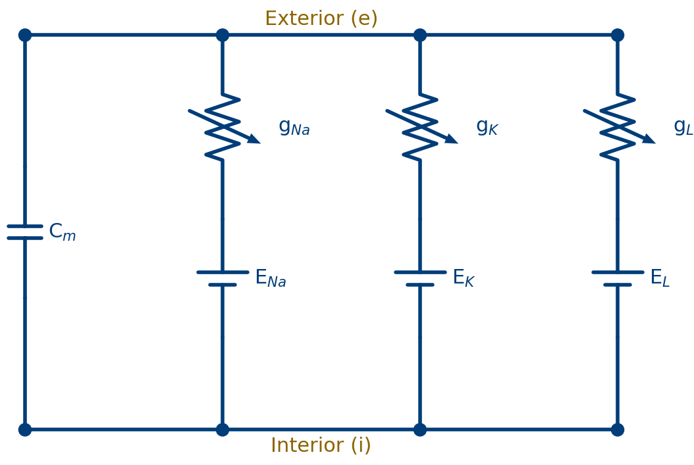
assets/img/tema4/fig01-modelo-membrana.pngAplicando la ley de corrientes de Kirchhoff, la corriente total de membrana es la suma de la capacitiva y las iónicas:
En estado estacionario (dVm/dt = 0, Im = 0) el potencial de reposo es un promedio de los potenciales de equilibrio ponderado por las conductancias, análogo a GHK:
2.5 El potencial de acción y el modelo de Hodgkin-Huxley
Cuando un estímulo despolariza la membrana por encima de un umbral (15 a 20 mV sobre el reposo), se abren canales de Na⁺ dependientes de voltaje. La entrada de Na⁺ despolariza más, lo que abre más canales en una retroalimentación positiva que lleva Vm hacia ENa en menos de un milisegundo. Dos mecanismos más lentos terminan el evento: la inactivación del sodio y la apertura retardada del potasio, que repolariza e incluso hiperpolariza. El potencial de acción obedece a la ley del todo o nada.
Hodgkin y Huxley lo describieron con variables de compuerta adimensionales m, h y n (probabilidad de apertura de las compuertas de activación de Na⁺, inactivación de Na⁺ y activación de K⁺):
Para el axón de calamar: ḡNa = 120 mS/cm², ḡK = 36 mS/cm², gL = 0.3 mS/cm² y Cm = 1 µF/cm². La Figura 2 muestra la simulación: el rápido pico de conductancia de sodio seguido de la de potasio, más lenta y sostenida, responsable de la repolarización y de la hiperpolarización.
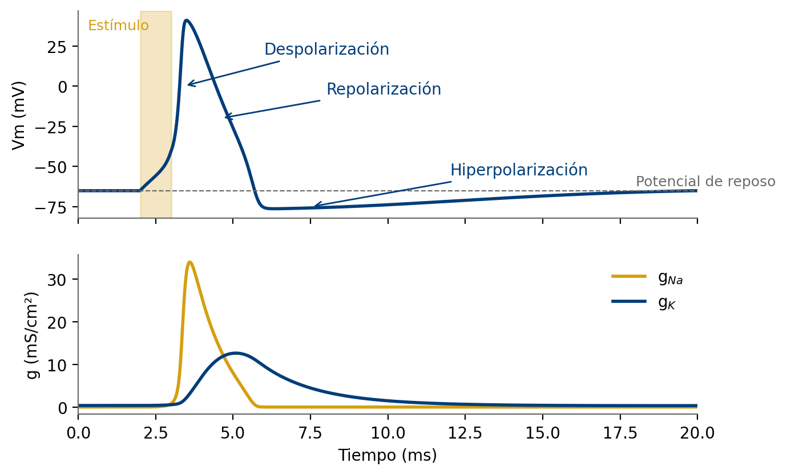
assets/img/tema4/fig02-hodgkin-huxley.pngDurante el periodo refractario absoluto ningún estímulo genera un nuevo potencial de acción porque los canales de sodio están inactivados; durante el relativo se requiere un estímulo mayor. Esto limita la frecuencia máxima de disparo y, en el corazón, impide la tetanización del miocardio.
2.6 Propagación del potencial de acción
El potencial de acción se propaga porque las corrientes locales despolarizan las regiones vecinas por encima del umbral. En fibras amielínicas la conducción es continua y su velocidad crece con la raíz cuadrada del diámetro; en fibras mielínicas la vaina reduce la capacitancia y la excitación "salta" entre nodos de Ranvier (conducción saltatoria), alcanzando hasta 100 a 120 m/s. En el músculo cardiaco el potencial de acción dura 200 a 300 ms por una meseta de corrientes de calcio, decisiva para la forma del ECG.
- El potencial de reposo depende de los gradientes de concentración (bomba Na⁺/K⁺) y de la permeabilidad selectiva.
- Nernst da el equilibrio de un ion; GHK, el potencial de membrana con varios iones.
- El potencial de acción resulta de cambios de conductancia dependientes de voltaje y tiempo (Hodgkin-Huxley).
- Eléctricamente, la membrana es un capacitor en paralelo con ramas de conductancia y fuente.
Del generador celular a la superficie corporal
Lo que se registra en la piel es el efecto de corrientes iónicas que fluyen por los tejidos que rodean a la fuente. Ese medio (líquidos, sangre, músculo, grasa, hueso y piel) es el conductor volumétrico que enlaza lo microscópico con lo macroscópico.
3.1 Fuentes de corriente y dipolos
Cuando una región de la fibra se despolariza, la corriente entra en el frente activo (sumidero) y sale en las regiones vecinas en reposo (fuentes). A cierta distancia, el par fuente-sumidero se aproxima como un dipolo de corriente con momento p = I·d. En un medio homogéneo e infinito de conductividad σ, el potencial a distancia r y ángulo θ es:
De aquí, tres ideas para la clínica: (a) el potencial decrece rápido con la distancia, por eso las señales de superficie son mucho menores que las intracelulares; (b) la polaridad depende de la orientación del dipolo respecto al par de electrodos, lo que explica por qué una misma activación da ondas positivas en unas derivaciones y negativas en otras; y (c) la amplitud depende de la conductividad del medio, que no es homogénea (pulmón y grasa poco conductores, sangre muy conductora).
3.2 Registro monofásico, bifásico y corriente de lesión
Con dos electrodos extracelulares sobre una fibra, un potencial de acción que viaja por debajo produce un registro bifásico. Si una región está lesionada (permanentemente despolarizada), el registro se vuelve monofásico. Este principio fundamenta la elevación del segmento ST en el infarto agudo: el tejido isquémico genera una "corriente de lesión" que desplaza la línea de base.
3.3 El corazón como generador dipolar
La suma vectorial de millones de dipolos celulares se representa en cada instante por un único vector cardiaco o dipolo equivalente. Einthoven propuso que el corazón está en el centro de un triángulo equilátero cuyos vértices son el brazo derecho, el brazo izquierdo y la pierna izquierda; cada derivación mide la proyección del vector sobre su eje. Aunque es una simplificación, sigue siendo la base de la interpretación del eje eléctrico.
Los registros se clasifican por la posición de los electrodos: intracelular (microelectrodo, potencial transmembrana completo ≈ 100 mV), extracelular cercano (agujas en músculo o nervio, cientos de µV a mV) y de superficie (piel, de µV a pocos mV).
| Señal | Origen | Amplitud | Ancho de banda | Electrodos |
|---|---|---|---|---|
| ECG | Actividad del miocardio | 0.5 a 4 mV | 0.05 a 150 Hz | Superficie Ag/AgCl |
| EEG | Potenciales postsinápticos corticales | 2 a 200 µV | 0.5 a 100 Hz | Cuero cabelludo, 10-20 |
| EMG superf. | Suma de potenciales de unidad motora | 0.05 a 5 mV | 10 a 500 Hz | Bipolar sobre el músculo |
| EMG aguja | Potenciales de unidad motora individuales | 0.1 a 10 mV | 20 Hz a 5 kHz | Aguja concéntrica/monopolar |
| ENG | Potencial de acción nervioso compuesto | 5 a 10 µV (superf.) | 100 Hz a 10 kHz | Superficie o aguja |
| EOG | Potencial corneorretiniano | 10 µV a 3.5 mV | DC a 10 Hz | Superficie periocular |
| ERG | Respuesta de la retina a la luz | 0.5 µV a 1 mV | 0.2 a 200 Hz | Lente corneal o fibra |
| EGG | Actividad eléctrica gástrica | 10 µV a 1 mV | 0.01 a 1 Hz | Superficie abdominal |
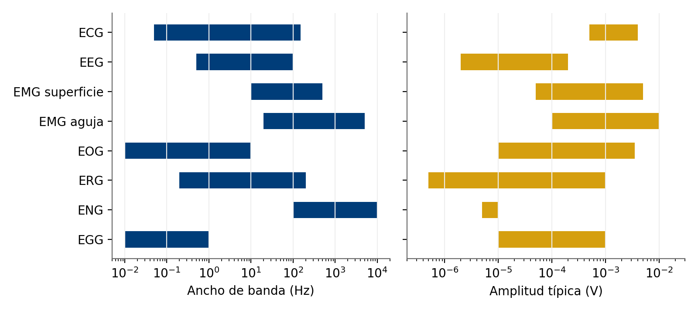
assets/img/tema4/fig03-espectro-biopotenciales.pngElectrodos para biopotenciales
El electrodo es un transductor: convierte la corriente iónica del cuerpo en corriente electrónica del instrumento, mediante reacciones de oxidación-reducción en la interfaz. De ahí muchos problemas prácticos: potenciales de corrimiento, ruido, deriva y artefactos de movimiento.
4.1 La interfaz electrodo-electrolito
Cuando un metal M contacta un electrolito con sus cationes, ocurren las reacciones M ⇄ Mn+ + n e⁻. La distribución de cargas resultante (doble capa eléctrica) genera el potencial de media celda (Ehc), medido por convención respecto al electrodo de hidrógeno (valor cero).
| Metal y reacción | Potencial de media celda (V) |
|---|---|
| Zn → Zn²⁺ + 2e⁻ | −0.763 |
| Fe → Fe²⁺ + 2e⁻ | −0.440 |
| H₂ → 2H⁺ + 2e⁻ | 0.000 (referencia) |
| Ag + Cl⁻ → AgCl + e⁻ | +0.223 |
| Cu → Cu²⁺ + 2e⁻ | +0.337 |
| Ag → Ag⁺ + e⁻ | +0.799 |
| Au → Au⁺ + e⁻ | +1.680 |
Si los dos electrodos fueran idénticos e iguales sus condiciones, sus potenciales se cancelarían. En la práctica queda una diferencia residual, el potencial de corrimiento (offset), que puede llegar a decenas o cientos de milivoltios; por eso las normas exigen que un ECG tolere ±300 mV sin saturarse. Cuando circula corriente, la diferencia respecto al equilibrio se llama sobrepotencial (óhmico, de concentración y de activación).
4.2 Electrodos polarizables y no polarizables
Un electrodo perfectamente polarizable no permite paso de carga: se comporta como capacitor (platino, oro; sobrepotenciales altos y sensibles al movimiento). Uno perfectamente no polarizable permite paso libre sin sobrepotencial. El electrodo de plata-cloruro de plata (Ag/AgCl) se acerca a este ideal: plata recubierta de AgCl en contacto con electrolito de Cl⁻; potencial estable, bajo ruido y poco sensible al movimiento. Es el estándar en ECG, EEG y EMG de superficie.
4.3 Circuito equivalente electrodo-piel
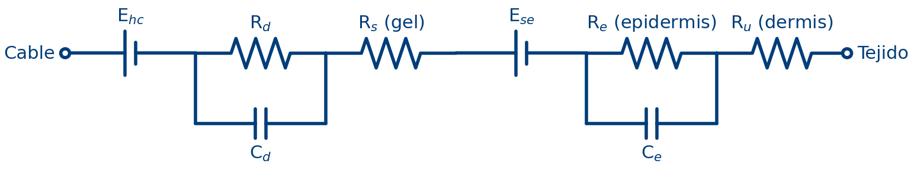
assets/img/tema4/fig04-circuito-electrodo-piel.pngEhc es el potencial de media celda; Rd y Cd, la resistencia y capacitancia de la doble capa; Rs, la resistencia del gel. En la piel, la epidermis (estrato córneo) actúa como membrana semipermeable con un potencial Ese e impedancia Re ∥ Ce; la dermis y tejidos profundos aportan Ru. La impedancia depende mucho de la frecuencia: a baja frecuencia domina la resistencia (cientos de kΩ en piel seca); a alta frecuencia los capacitores cortocircuitan las ramas resistivas. Limpiar con alcohol y abradir ligeramente reduce la impedancia a pocos kΩ: una mala preparación de la piel es la causa más frecuente de registros ruidosos.
4.4 Artefactos de movimiento
Al moverse un electrodo respecto al electrolito, la doble capa se perturba y cambia el potencial de media celda: aparece un artefacto de movimiento. Con Ag/AgCl se reduce, pero persiste el originado en la piel (al deformarse cambia Ese). Sus componentes de baja frecuencia se superponen al ECG y al EEG, así que no pueden eliminarse por completo con filtros sin distorsionar la señal. Estrategias: preparación de la piel, buen gel, fijación de cables y, en prueba de esfuerzo, electrodos flotantes (con esponja en copa) que alejan el metal de la piel.
4.5 Tipos de electrodos
| Tipo | Descripción | Aplicación típica |
|---|---|---|
| Placa metálica | Lámina de metal con gel; históricos, reutilizables | ECG de extremidades en equipos antiguos |
| Succión | Copa de goma que se adhiere por vacío | Precordiales de corta duración |
| Flotante | El metal no toca la piel; el gel hace de puente | Monitorización, Holter, esfuerzo |
| Desechable Ag/AgCl | Broche de Ag/AgCl, hidrogel adhesivo | ECG diagnóstico, EMG de superficie |
| Seco o textil | Sin gel; contacto capacitivo o resistivo | Dispositivos portátiles y vestibles |
| Aguja / alambre | Penetran el tejido; concéntrica o monopolar | EMG de aguja, registros intramusculares |
| Microelectrodos | Pipetas de vidrio o arreglos de silicio de micras | Registro intracelular, investigación, BCI |
Antes de registrar, revise la caducidad de los electrodos desechables: el hidrogel se deshidrata y sube la impedancia. No mezcle electrodos de distintos materiales en un mismo registro: la diferencia de potenciales de media celda puede ser de cientos de milivoltios y saturar la primera etapa del amplificador.
Amplificadores de biopotenciales
Aumentan la amplitud de la señal sin distorsionarla y rechazando interferencias. El reto: la señal útil está en µV a mV, mientras aparecen voltajes de modo común de decenas o cientos de mV (incluso volts) acoplados desde la red de 60 Hz.
5.1 Requisitos de diseño
- Alta impedancia de entrada (> 10 MΩ, idealmente GΩ) para no cargar la fuente y minimizar la conversión de modo común a diferencial.
- Entrada diferencial y alto CMRR, típicamente > 90 a 100 dB.
- Ganancia adecuada: ≈ 1 000 para ECG y 10 000 a 100 000 para EEG, repartida en etapas para evitar saturación por el corrimiento.
- Ancho de banda acorde: 0.05 a 150 Hz (ECG diagnóstico) y 0.5 a 40 Hz (monitorización).
- Bajo ruido referido a la entrada (pocos µV pico a pico).
- Aislamiento galvánico y protección contra desfibrilador, electrocirugía y descargas electrostáticas.
- Recuperación rápida tras saturación.
5.2 Modo diferencial, modo común y CMRR
Con entradas V₁ y V₂: voltaje diferencial Vd = V₁ − V₂ y de modo común Vcm = (V₁ + V₂)/2. La salida real es:
Un amplificador ideal tendría Acm = 0. En la práctica pesa más el desbalance de impedancias de los electrodos: si difieren en ΔZ y la impedancia de modo común del amplificador es Zcm, parte del modo común se convierte en señal diferencial espuria:
Vcm de 60 Hz de 100 mV; las impedancias de electrodo difieren en 20 kΩ. Compare Zcm = 10 MΩ vs. 1 GΩ:
Zcm = 10 MΩ: Vd,error = 0.1·(2×10⁴ / 10⁷) = 200 µV
Zcm = 1 GΩ: Vd,error = 0.1·(2×10⁴ / 10⁹) = 2 µV
200 µV es el 20 % de un QRS de 1 mV: inaceptable. Con CMRR = 100 dB el error por ganancia de modo común es solo 1 µV. Conclusión: con impedancias reales, la impedancia de entrada suele ser el factor limitante, más que el CMRR del circuito integrado.
5.3 El amplificador de instrumentación
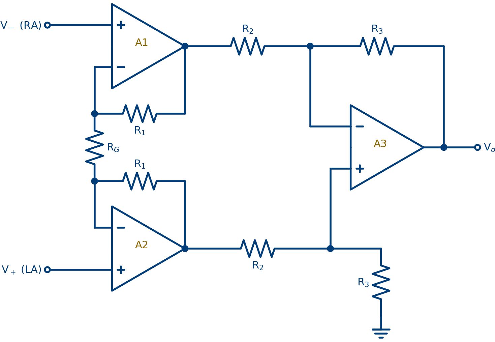
assets/img/tema4/fig05-amplificador-instrumentacion.pngLa primera etapa (A1 y A2 no inversores) da alta impedancia de entrada y ganancia diferencial ajustable con una sola resistencia RG, mientras su ganancia de modo común es unitaria. La segunda etapa (A3) es un diferencial que convierte a salida referida a tierra y rechaza el modo común remanente.
En integrados como el INA128, AD620 o AD8421, las resistencias internas ajustadas con láser dan CMRR > 100 dB. Conviene limitar la ganancia de la primera etapa: con un corrimiento de 300 mV y alimentación ±5 V, una ganancia de 10 da 3 V de continua (aún lineal), mientras que 1 000 saturaría. Por eso: ganancia moderada de entrada, filtro pasa altas que elimina la continua y después la ganancia restante.
5.4 Tratamiento del potencial de corrimiento
Técnicas: (a) acoplamiento en CA con filtro pasa altas RC tras la primera etapa; (b) restauración de CD que descarga rápido el capacitor de acoplamiento al saturar; (c) realimentación con integrador (servo de CD) que resta la continua; y (d) acoplamiento en CD con convertidores de 24 bits que digitalizan la señal junto con el corrimiento y lo eliminan por software.
Filtro RC pasa altas de primer orden, fc = 0.05 Hz, con R = 3.3 MΩ:
C = 1 / (2π·fc·R) = 1 / (2π·0.05·3.3×10⁶) ≈ 0.96 µF → 1 µF
La constante de tiempo es τ = RC = 3.3 s; tras una saturación, la línea de base tarda ≈ 5τ ≈ 16 s en estabilizarse, lo que justifica los circuitos de restauración rápida en cuidados intensivos.
5.5 Circuito de pierna derecha activa (DRL)
En lugar de conectar el paciente a tierra, el DRL toma Vcm en el punto medio de RG, lo amplifica e invierte, y lo reinyecta por el electrodo de la pierna derecha. El lazo de realimentación negativa reduce el modo común efectivo por un factor igual a la ganancia del lazo. Una resistencia en serie elevada (MΩ) limita la corriente por el paciente si el amplificador falla, mejorando la seguridad al evitar la conexión directa a tierra.
5.6 Aislamiento, protección y cadena de adquisición
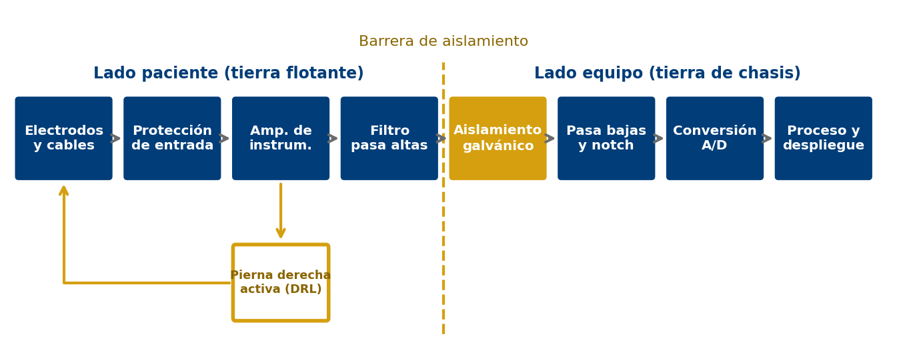
assets/img/tema4/fig06-cadena-adquisicion-ecg.pngLos bloques previos a la barrera se alimentan con una fuente aislada y tierra flotante; la señal cruza por acopladores ópticos, transformadores o capacitivos, y los amplificadores de aislamiento mantienen la corriente de fuga hacia el paciente en el orden de microamperios.
Protección contra desfibrilación
Un desfibrilador aplica 3 a 5 kV con hasta 360 J. El ECG debe sobrevivir y recuperar el trazo en segundos: resistencias limitadoras en serie de varios kΩ (a menudo en los cables), lámparas de neón o tubos de descarga de gas que conducen sobre 70 a 90 V, y diodos que recortan a un nivel seguro. Las fallas típicas son la apertura de las resistencias en serie de los cables y la destrucción de la etapa de entrada; por eso los cables entran en el programa de mantenimiento.
Filtrado de la interferencia de electrocirugía
Las unidades de electrocirugía (ESU) operan a 300 kHz a 5 MHz con cientos de watts. Aunque la frecuencia esté lejos del ECG, la alinealidad de las uniones semiconductoras puede demodular la RF y generar componentes de baja frecuencia. Por eso los monitores quirúrgicos llevan filtros pasa bajas de RF (redes RC o LC con ferrita) en las entradas, antes de cualquier elemento activo.
Electrocardiografía
El registro de la actividad eléctrica del corazón desde la superficie. Es la medición bioeléctrica más empleada en la clínica por su bajo costo, su carácter no invasivo y la riqueza de información que aporta.
6.1 El sistema de conducción y la génesis del ECG
La activación normal se inicia en el nodo sinoauricular (SA) de la aurícula derecha (60 a 100 lpm), se extiende por las aurículas y llega al nodo auriculoventricular (AV), donde se retrasa ≈ 0.1 s para permitir el llenado ventricular. Luego viaja por el haz de His, sus ramas y la red de Purkinje. El ECG de superficie es la manifestación en el conductor volumétrico de la suma de todos los potenciales de acción.
6.2 Morfología del ECG normal
En un ciclo se reconocen: la onda P (despolarización auricular), el complejo QRS (despolarización ventricular, que oculta la repolarización auricular) y la onda T (repolarización ventricular); a veces una pequeña onda U. El registro se hace a 25 mm/s y 10 mm/mV, de modo que cada cuadro pequeño equivale a 0.04 s y 0.1 mV, y cada cuadro grande (5 mm) a 0.2 s y 0.5 mV.
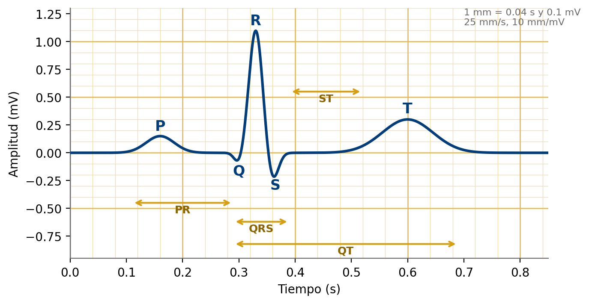
assets/img/tema4/fig07-ciclo-ecg-papel.png| Parámetro | Significado fisiológico | Valor normal en adulto |
|---|---|---|
| Onda P | Despolarización auricular | < 0.12 s; amplitud < 0.25 mV |
| Intervalo PR | Del inicio auricular al ventricular (retardo AV) | 0.12 a 0.20 s |
| Complejo QRS | Despolarización ventricular | 0.06 a 0.10 s (< 0.12 s) |
| Segmento ST | Ventrículo totalmente despolarizado | Isoeléctrico (desnivel < 0.1 mV) |
| Onda T | Repolarización ventricular | Positiva en la mayoría de derivaciones |
| Intervalo QT | Actividad eléctrica ventricular total | QTc < 0.44 s aprox. |
| Intervalo RR | Duración del ciclo cardiaco | 0.6 a 1.0 s (60 a 100 lpm) |
Como el QT se acorta al subir la frecuencia, se corrige con la fórmula de Bazett (QT y RR en segundos):
La frecuencia cardiaca puede estimarse a 25 mm/s dividiendo 1 500 entre el número de cuadros pequeños entre dos ondas R, o 300 entre el número de cuadros grandes.
6.3 Sistema estándar de 12 derivaciones
Una derivación es la diferencia de potencial entre un par de electrodos o entre un electrodo y una referencia construida con varios. El ECG de 12 derivaciones usa 10 electrodos: cuatro en extremidades (RA, LA, LL y RL, este último como referencia/DRL) y seis precordiales.
Derivaciones bipolares de extremidades (Einthoven)
De aquí la ley de Einthoven, II = I + III, que verifica el correcto conexionado de los cables.
Derivaciones aumentadas de Goldberger
Wilson propuso la terminal central de Wilson (VW), promedio de los tres electrodos de extremidades. Goldberger notó que al excluir la propia extremidad del promedio la amplitud crece un 50 % sin cambiar la forma:
Las seis derivaciones de extremidades exploran el plano frontal con ejes separados 30°, formando el sistema hexaxial, base para calcular el eje eléctrico medio del QRS (normal entre −30° y +90°).
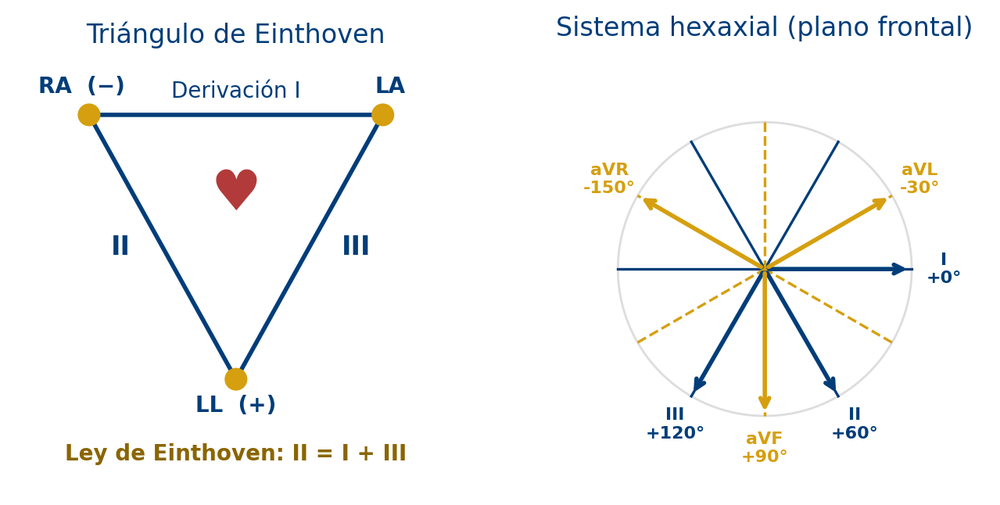
assets/img/tema4/fig08-einthoven-hexaxial.pngDerivaciones precordiales
V1 a V6 miden el potencial de electrodos en el tórax respecto a la terminal central de Wilson y exploran el plano horizontal. Su colocación es crucial: un espacio intercostal de diferencia puede simular patología.
| Deriv. | Ubicación del electrodo | Región |
|---|---|---|
| V1 | 4.º espacio intercostal, borde esternal derecho | Septal |
| V2 | 4.º espacio intercostal, borde esternal izquierdo | Septal |
| V3 | Punto medio entre V2 y V4 | Anterior |
| V4 | 5.º espacio intercostal, línea medioclavicular izq. | Anterior |
| V5 | Línea axilar anterior, nivel de V4 | Lateral |
| V6 | Línea axilar media, nivel de V4 | Lateral |
6.4 Otras modalidades de registro ECG
- Monitorización continua (3 o 5 electrodos): hospitalización y quirófano, banda reducida (0.5 a 40 Hz); no apta para valorar ST con fines diagnósticos.
- Holter: registro ambulatorio de 24 a 48 h, 2 o 3 canales, para arritmias paroxísticas e isquemia silenciosa.
- Prueba de esfuerzo: exige electrodos poco susceptibles al movimiento, sistema Mason-Likar y promediado de latidos.
- ECG esofágico e intracavitario: electrodos cerca de las aurículas, ideales para ver la onda P.
- ECG de un canal en portátiles: relojes y parches que registran una derivación tipo I, útiles para tamizaje de fibrilación auricular.
6.5 Detección del complejo QRS
Es la base de la frecuencia cardiaca, las alarmas y el análisis de arritmias. El algoritmo clásico de Pan y Tompkins (1985) combina filtro pasa banda de 5 a 15 Hz, derivación, elevación al cuadrado, integración en ventana móvil de ≈ 150 ms y umbrales adaptativos. Los monitores deben además detectar y rechazar los pulsos de marcapasos (0.1 a 2 ms), lo que exige frecuencias de muestreo elevadas.
Electroencefalografía
Registra desde el cuero cabelludo la actividad eléctrica del cerebro. Su origen principal no son los potenciales de acción, sino la suma de potenciales postsinápticos de poblaciones de neuronas piramidales orientadas en paralelo, que actúan como dipolos.
La señal atraviesa meninges, líquido cefalorraquídeo, cráneo (muy resistivo) y cuero cabelludo, por lo que llega muy atenuada y espacialmente difuminada: amplitud típica de 10 a 100 µV.
7.1 Sistema internacional 10-20
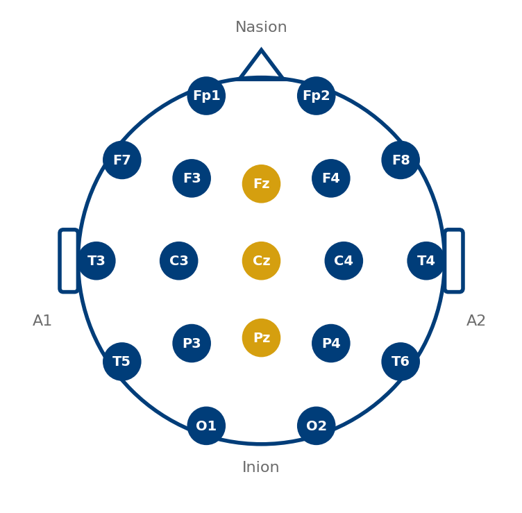
assets/img/tema4/fig09-sistema-10-20.pngToma como referencias el nasion, el inion y los puntos preauriculares; los electrodos se ubican a distancias del 10 % o 20 %. Las letras indican región (Fp prefrontal, F frontal, C central, T temporal, P parietal, O occipital), los números impares el hemisferio izquierdo, los pares el derecho y la z la línea media. En alta densidad se usan 10-10 y 10-5, con hasta 256 canales.
7.2 Ritmos cerebrales
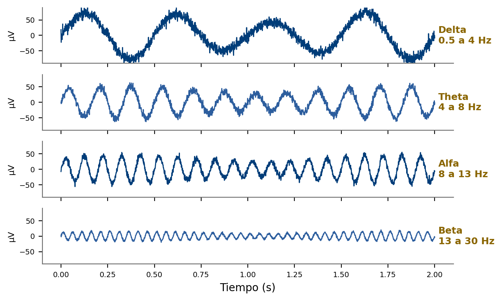
assets/img/tema4/fig10-ritmos-eeg.pngEl alfa (8 a 13 Hz) predomina en occipital con ojos cerrados y se bloquea al abrirlos; el beta (13 a 30 Hz) se asocia a alerta y actividad mental; el theta (4 a 8 Hz) aparece en somnolencia y niños; el delta (0.5 a 4 Hz) caracteriza el sueño profundo y, en el adulto despierto, puede indicar lesión; la banda gamma (> 30 Hz) se relaciona con procesos cognitivos.
7.3 Montajes, potenciales evocados y requisitos
Un montaje define cómo se combinan los electrodos: referencial (cada electrodo contra una referencia común, p. ej. lóbulos A1 y A2) o bipolar (diferencias entre adyacentes, resalta focos). Los potenciales evocados (visuales, auditivos de tallo, somatosensoriales) son de 0.1 a 10 µV, sincronizados con un estímulo; se extraen por promediación coherente: al promediar N respuestas, la relación señal a ruido mejora en √N. El amplificador de EEG requiere ganancias de 10 000 a 100 000, ruido < 1 µV rms, impedancias < 5 kΩ y alto CMRR. Artefactos frecuentes: movimientos oculares y parpadeo (en realidad un EOG), músculos de frente y mandíbula, sudor, ECG e interferencia de línea.
Electromiografía y electroneurografía
El EMG registra la actividad eléctrica del músculo; el ENG, el potencial de acción compuesto de un nervio. Ambos son claves en el diagnóstico neuromuscular y en el control de prótesis mioeléctricas.
8.1 La unidad motora y el origen del EMG
La unidad motora es una motoneurona alfa y todas las fibras que inerva. Cuando dispara, sus fibras se activan casi a la vez y la suma de sus potenciales forma el potencial de acción de unidad motora (PAUM). La fuerza se gradúa por reclutamiento de más unidades y por aumento de su frecuencia de disparo. El EMG de superficie es la suma de muchos trenes de PAUM, con aspecto de ruido aleatorio de media cero cuya amplitud crece con la fuerza.
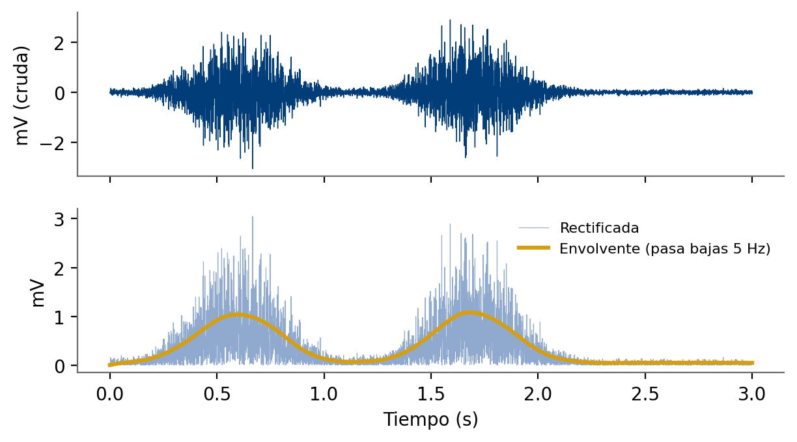
assets/img/tema4/fig11-emg-superficie.png8.2 EMG de superficie y EMG de aguja
El EMG de superficie usa electrodos bipolares Ag/AgCl separados ≈ 2 cm y alineados con las fibras, más una referencia sobre hueso. Es no invasivo (biomecánica, rehabilitación, ergonomía, biorretroalimentación y prótesis mioeléctricas, donde la envolvente sirve de señal de mando). Su banda útil es 10 a 500 Hz, con la mayor energía entre 50 y 150 Hz. El EMG de aguja observa PAUM individuales: fibrilaciones y ondas agudas positivas en reposo sugieren denervación; PAUM pequeños y polifásicos sugieren miopatía. La frecuencia mediana del espectro disminuye en una contracción sostenida y se usa como indicador de fatiga.
8.3 Electroneurografía y estudios de conducción
El ENG registra el potencial de acción compuesto de un nervio. En los estudios de conducción se estimula en dos puntos y se mide la latencia. La velocidad de conducción se calcula como la distancia entre puntos entre la diferencia de latencias, lo que elimina el tiempo de la unión neuromuscular:
Estímulo en muñeca y codo, registro en el abductor corto del pulgar. Latencias: 3.6 ms (muñeca) y 7.8 ms (codo); distancia: 23 cm.
VCN = 230 mm / (7.8 − 3.6) ms = 230 / 4.2 ≈ 54.8 m/s
El valor normal en extremidades superiores es 50 a 70 m/s; un valor mucho menor sugeriría desmielinización, y una amplitud reducida con velocidad conservada, pérdida axonal.
Otros biopotenciales
Más allá de ECG, EEG y EMG, otras señales bioeléctricas tienen usos clínicos y de investigación específicos.
9.1 Electrooculograma (EOG)
El ojo es un dipolo fijo, con la córnea positiva respecto a la retina (potencial corneorretiniano de 0.4 a 1 mV). Al girar el globo cambia la orientación del dipolo y el potencial medido por electrodos a los lados (movimientos horizontales) o arriba y abajo (verticales). La relación es casi lineal en ±30°, con sensibilidad de 15 a 20 µV por grado. Se usa en polisomnografía, evaluación del nistagmo, interfaces para personas con discapacidad y como referencia para eliminar artefactos oculares del EEG. Requiere amplificadores acoplados en CD y electrodos muy estables.
9.2 Electrorretinograma (ERG)
Respuesta eléctrica de la retina ante luz, registrada entre un electrodo corneal (lente de contacto o fibra) y una referencia. Su forma incluye una onda a negativa (fotorreceptores) y una onda b positiva (células bipolares y de Müller). Se usa en el diagnóstico de distrofias retinianas y enfermedades hereditarias.
9.3 Electrogastrograma y otras señales
El EGG registra desde la superficie abdominal la actividad eléctrica lenta del estómago (≈ 3 ciclos por minuto, 0.05 Hz). Otras señales: el electrohisterograma del útero (útil en el trabajo de parto) y los registros intracorticales o electrocorticográficos en neurocirugía e interfaces cerebro-computadora invasivas.
Digitalización y procesamiento básico
Casi todos los equipos digitalizan los biopotenciales. La conversión impone tres decisiones: la frecuencia de muestreo, la resolución y el filtrado antialias.
10.1 Frecuencia de muestreo
El teorema de Nyquist exige fs mayor que el doble de la máxima frecuencia de la señal. En la práctica se usa margen: para un ECG diagnóstico de 150 Hz se recomiendan al menos 500 muestras/s, y 1 000 Hz o más para potenciales tardíos o pulsos de marcapasos. Antes del convertidor se coloca un filtro antialias pasa bajas que atenúe las componentes por encima de fs/2, que de lo contrario se reflejarían en la banda útil.
10.2 Resolución
El escalón de cuantización o bit menos significativo (LSB) referido a la entrada determina la mínima variación detectable:
donde VFS es el intervalo a plena escala, n el número de bits y G la ganancia analógica previa. Los sistemas modernos usan convertidores sigma-delta de 24 bits con ganancia moderada, lo que permite digitalizar el corrimiento sin saturar.
Ganancia G = 1 000, convertidor de 12 bits, entrada de 0 a 5 V.
LSBentrada = 5 V / (4 096 · 1 000) ≈ 1.22 µV
Un QRS de 1 mV se convierte en 1 V a la salida y ocupa ≈ 820 niveles, más que suficiente. La misma cadena para EEG (20 µV) daría solo ≈ 16 niveles, por lo que haría falta más ganancia o más resolución.
10.3 Filtrado digital
Ya digitalizada, se aplican filtros para eliminar la deriva de línea de base (pasa altas, idealmente de fase lineal para no distorsionar el ST), el ruido de alta frecuencia (pasa bajas) y la red (notch de 60 Hz en México y América, 50 Hz en Europa). El notch se usa con prudencia porque puede introducir oscilaciones en el QRS y reducir componentes útiles cercanas a 60 Hz, sobre todo en EMG. Los filtros de fase cero (hacia adelante y atrás) solo son posibles fuera de línea.
Interferencias, artefactos y solución de problemas
Un registro es de calidad cuando la señal de interés se distingue de las interferencias, que pueden ser fisiológicas, técnicas o ambientales.
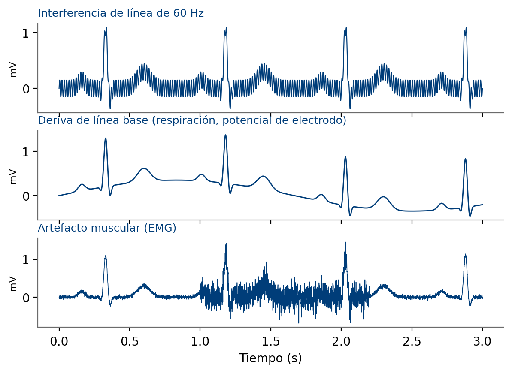
assets/img/tema4/fig12-interferencias-ecg.png11.1 Interferencia de la red eléctrica
La red de 127 V y 60 Hz se acopla por dos mecanismos. El acoplamiento capacitivo (campo eléctrico) inyecta corrientes de desplazamiento de decenas de nanoamperios que, al fluir por las impedancias de los electrodos, generan voltajes de modo común y, si hay desbalance, diferenciales. El acoplamiento inductivo (campo magnético) induce voltajes en el lazo de los cables, proporcionales a su área. Contramedidas: impedancias bajas y balanceadas, circuito DRL, cables blindados con guarda activa, trenzar o juntar los cables para reducir el área del lazo, alejar el equipo de transformadores y, como último recurso, el filtro notch.
11.2 Guía de solución de problemas
| Síntoma | Causas probables | Acciones correctivas |
|---|---|---|
| Interferencia de 60 Hz | Electrodo suelto o seco, desbalance de impedancias, cable dañado, equipos o cables de potencia cercanos, tierra deficiente | Revisar/reemplazar electrodos, preparar la piel, verificar el cable, reubicar el equipo, revisar la tierra |
| Línea base errante | Respiración, movimiento, gel seco, electrodos de distinto material, tensión en cables | Relajar al paciente, fijar cables, usar electrodos nuevos del mismo lote, verificar el pasa altas |
| Artefacto muscular | Paciente tenso, con frío o temblor; electrodos sobre masas musculares | Tranquilizar y abrigar, colocar electrodos en zonas óseas o proximales |
| Trazo plano | Electrodo desprendido, cable roto, saturación por corrimiento | Revisar conexión, probar con simulador, esperar la recuperación de la línea base |
| aVR positiva / II ≠ I + III | Inversión de cables de brazos | Verificar colocación y código de colores |
| Picos esporádicos | Falso contacto, descargas electrostáticas, marcapasos | Revisar conectores y cables, identificar pulsos de marcapasos |
Dos convenciones. AHA (América): RA blanco, LA negro, LL rojo, RL verde, V café. IEC (Europa): R rojo, L amarillo, F verde, N negro, C blanco. Antes de trabajar con un equipo, identifique cuál convención usa, sobre todo en hospitales con equipos de distintos orígenes.
Seguridad eléctrica y mantenimiento
La corriente que atraviesa el cuerpo puede estimular tejidos, quemar y, en el peor caso, inducir fibrilación ventricular. Los límites cambian radicalmente cuando hay una vía conductora directa al corazón.
12.1 Macrochoque y microchoque
En el macrochoque (corriente por la piel) a 60 Hz: percepción ≈ 0.5 mA, "no soltar" ≈ 10 mA y fibrilación ventricular desde 75 a 400 mA. Pero con una vía directa al corazón (catéter, electrodo de marcapasos temporal), el microchoque de apenas decenas a cientos de microamperios puede ser peligroso. Por eso los límites de fuga en partes aplicadas cardiacas son del orden de 10 µA.
12.2 Clasificación de partes aplicadas (IEC 60601-1)
| Tipo | Descripción | Fuga al paciente (normal / primer defecto) |
|---|---|---|
| B | Con conexión a tierra permitida; no para contacto cardiaco directo | 100 µA / 500 µA |
| BF | Flotante (aislada de tierra); contacto con el paciente, no con el corazón | 100 µA / 500 µA |
| CF | Flotante con máximo aislamiento; apta para aplicación cardiaca directa | 10 µA / 50 µA |
Los electrocardiógrafos y monitores suelen tener partes aplicadas tipo CF a prueba de desfibrilación (símbolo de corazón en un cuadro con un pequeño desfibrilador). Las normas particulares IEC 60601-2-25 (electrocardiógrafos) e IEC 60601-2-27 (monitores de ECG) especifican requisitos de respuesta en frecuencia, CMRR, tolerancia al corrimiento, recuperación tras desfibrilación y detección de marcapasos.
12.3 Mantenimiento preventivo y verificación
- Inspección visual: carcasa, conectores, cables del paciente, cable de alimentación y etiquetado.
- Pruebas de seguridad eléctrica: resistencia de tierra de protección y corrientes de fuga (chasis y paciente) en condición normal y de primer defecto.
- Verificación funcional con simulador: señal de 1 mV, ritmo sinusal a varias frecuencias, exactitud de la FC, alarmas, detección de derivación desconectada y de marcapasos.
- Verificación de desempeño: respuesta en frecuencia, velocidad de papel/barrido (25 y 50 mm/s) y sensibilidad (5, 10 y 20 mm/mV).
- Revisión de cables: continuidad y resistencias de protección; son lo que más falla, sobre todo tras desfibrilaciones.
- Documentación: registro de resultados, etiquetas de verificación y seguimiento de fallas recurrentes.
Práctica de laboratorio sugerida
Registro de ECG de tres derivaciones y verificación de la ley de Einthoven.
Objetivos
- Registrar las derivaciones I, II y III en un voluntario sano con un amplificador de instrumentación y un sistema de adquisición.
- Medir amplitudes e intervalos, calcular la FC y el QTc, y verificar numéricamente la ley de Einthoven.
- Observar el efecto de la preparación de la piel, del movimiento y del circuito DRL sobre la calidad del registro.
Procedimiento
Prepara la piel
Limpia con alcohol las muñecas (o cara interna de antebrazos) y el tobillo izquierdo; deja secar.
Coloca los electrodos
En RA, LA, LL y RL. Para la derivación I: entrada + a LA, − a RA, referencia/DRL a RL.
Registra
Muestreo a 500 Hz o más; 30 s con el voluntario sentado, relajado y en silencio. Repite para II y III.
Provoca artefactos
10 s tensando los brazos y 10 s respirando profundo. Documenta lo observado.
Compara condiciones
Repite sin preparación de piel y, si el módulo lo permite, con el DRL desconectado.
Filtra
Aplica pasa banda de 0.5 a 40 Hz y notch de 60 Hz; compara con la señal cruda.
Material
Los circuitos de laboratorio no tienen aislamiento certificado. Nunca conectes a una persona a un circuito alimentado directa o indirectamente desde la red (incluida una laptop cargando). Usa solo baterías. No realices la práctica con portadores de marcapasos o dispositivos implantables. Los registros son didácticos, no diagnósticos.
Análisis y reporte
- Mide en ≥ 5 latidos las ondas P, R y T y los intervalos PR, QRS, QT y RR (media y desviación estándar).
- Calcula la FC y el QTc de Bazett.
- Compara R en II con la suma de I y III y discute las discrepancias.
- Explica cuantitativamente el efecto de la preparación de la piel y del DRL con los conceptos de las secciones 04 y 05.
Ejercicios y autoevaluación
Problemas propuestos con respuestas y un cuestionario conceptual para verificar la comprensión.
14.1 Problemas propuestos
Nernst del potasio
Calcula EK a 37 °C para [K]o = 5 mM y [K]i = 140 mM. ¿Qué ocurre con el reposo si [K]o sube a 10 mM (hiperpotasemia)?
Reposo por conductancias
Con gK = 0.37, gNa = 0.011, gL = 0.3 mS/cm², EK = −77 mV, ENa = +50 mV y EL = −54.4 mV, obtén el reposo con la expresión de conductancias ponderadas.
Ganancia del INA
Con R₁ = 24.7 kΩ, R₂ = R₃ = 10 kΩ, determina RG para ganancia 10 en la primera etapa. ¿Cuál es la salida de continua si el corrimiento es 250 mV?
FC y QTc
A 25 mm/s hay 20 cuadros pequeños entre dos ondas R y el QT mide 9 cuadros. Calcula la FC y el QTc.
Eje eléctrico
I tiene un QRS neto de +0.6 mV y III de +0.4 mV. Calcula la amplitud en II y aVF y estima el eje.
Promediación
Se promedian 400 respuestas de un potencial evocado auditivo. Si la SNR individual es 0.1, ¿cuál es la SNR tras el promedio?
14.2 Respuestas
- EK = 61.5·log(5/140) ≈ −89 mV. Con 10 mM, EK ≈ −70.5 mV: la membrana se despolariza, lo que explica la hiperexcitabilidad inicial y las ondas T picudas de la hiperpotasemia.
- Vm = (0.37·(−77) + 0.011·50 + 0.3·(−54.4)) / 0.681 ≈ −65 mV, el reposo del modelo de Hodgkin-Huxley.
- 1 + 2R₁/RG = 10 → RG = 2(24.7 kΩ)/9 ≈ 5.49 kΩ. La salida de continua es 10 × 0.25 V × (R₃/R₂) = 2.5 V.
- RR = 20 × 0.04 = 0.8 s → FC = 75 lpm. QT = 0.36 s; QTc = 0.36/√0.8 ≈ 0.40 s, normal.
- Por Einthoven, II = I + III = 1.0 mV. aVF = (II + III)/2 = 0.7 mV. Con I a 0° y aVF a 90°, el eje ≈ arctan(0.7/0.6) ≈ 49°, normal.
- La SNR mejora en √400 = 20, por lo que pasa de 0.1 a 2.
14.3 Cuestionario de autoevaluación
- ¿Por qué el interior de una célula en reposo es negativo? Menciona la bomba Na⁺/K⁺ y la permeabilidad selectiva.
- Explica la diferencia entre periodo refractario absoluto y relativo, y su importancia en el músculo cardiaco.
- ¿Qué representa el conductor volumétrico y por qué la polaridad de una onda depende de la derivación?
- Define potencial de media celda y potencial de corrimiento. ¿Por qué se prefieren electrodos Ag/AgCl?
- Dibuja el circuito equivalente electrodo-piel y explica por qué la abrasión mejora el registro.
- Enumera cinco requisitos de un amplificador de biopotenciales y justifícalos.
- ¿Por qué la ganancia de la primera etapa de un ECG se mantiene baja?
- Describe el circuito de pierna derecha activa y sus ventajas de seguridad.
- Menciona tres técnicas para tratar el corrimiento del potencial de electrodo.
- ¿Qué protege al ECG de una descarga de desfibrilador? ¿Cuáles son las fallas típicas?
- ¿Por qué la interferencia de un electrobisturí puede aparecer en la banda del ECG si opera a cientos de kHz?
- Escribe las ecuaciones de I, II, III, aVR, aVL y aVF, y describe la colocación de V1 a V6.
- ¿Qué diferencia hay entre el ancho de banda de un ECG diagnóstico y uno de monitorización?
- ¿Cuál es el origen fisiológico del EEG y por qué su amplitud es tan pequeña?
- Explica cómo se obtiene la envolvente del EMG y su uso en prótesis mioeléctricas.
- Distingue macrochoque de microchoque y explica qué significa una parte aplicada tipo CF.
Glosario y referencias
Términos clave de la guía y las fuentes en que se basa el contenido.
| Término | Definición |
|---|---|
| Biopotencial | Diferencia de potencial producida por la actividad electroquímica de células excitables. |
| Célula excitable | Célula capaz de generar un potencial de acción: neuronas, fibras musculares y algunas glandulares. |
| CMRR | Relación de rechazo de modo común; cociente entre ganancia diferencial y de modo común, en dB. |
| Conductor volumétrico | Medio conductor (tejidos y líquidos) por el que se propagan las corrientes bioeléctricas. |
| Derivación | Par de electrodos, o electrodo y referencia, cuya diferencia de potencial es un canal de registro. |
| Doble capa eléctrica | Distribución de cargas en la interfaz metal-electrolito que origina el potencial de media celda. |
| DRL | Circuito de pierna derecha activa; realimenta el modo común invertido al paciente para reducirlo. |
| Parte aplicada | Parte del equipo que contacta físicamente al paciente (IEC 60601-1). |
| Potencial de acción | Cambio transitorio, rápido y estereotipado del potencial de membrana ante un estímulo supraumbral. |
| Potencial de corrimiento | Diferencia de continua entre los potenciales de media celda de dos electrodos. |
| Potencial de reposo | Potencial de membrana estable de una célula no estimulada, típicamente de −60 a −90 mV. |
| PAUM | Potencial de acción de unidad motora; suma de los potenciales de las fibras de una unidad motora. |
| Terminal central de Wilson | Referencia formada por el promedio de RA, LA y LL, usada en derivaciones unipolares. |
| Umbral | Nivel de despolarización a partir del cual se dispara un potencial de acción. |
Referencias y lecturas recomendadas
- Webster, J. G. (Ed.). (2010). Medical instrumentation: Application and design (4.ª ed.). Wiley.Capítulos 4 (The origin of biopotentials), 5 (Biopotential electrodes) y 6 (Biopotential amplifiers).
- Enderle, J. D., y Bronzino, J. D. (2012). Introduction to biomedical engineering (3.ª ed.). Academic Press.Capítulo 12 (Bioelectric phenomena).
- Facultad de Ingeniería, UNAM. Tema 12: Electrocardiografía (rev. 2). Notas del curso de Mediciones Clínicas.
- Malmivuo, J., y Plonsey, R. (1995). Bioelectromagnetism: Principles and applications of bioelectric and biomagnetic fields. Oxford University Press.Disponible en acceso abierto.
- Hodgkin, A. L., y Huxley, A. F. (1952). A quantitative description of membrane current and its application to conduction and excitation in nerve. The Journal of Physiology, 117(4), 500-544.
- Pan, J., y Tompkins, W. J. (1985). A real-time QRS detection algorithm. IEEE Transactions on Biomedical Engineering, 32(3), 230-236.
- Kligfield, P., et al. (2007). Recommendations for the standardization and interpretation of the electrocardiogram, Part I. Circulation, 115(10), 1306-1324.
- Carr, J. J., y Brown, J. M. (2001). Introduction to biomedical equipment technology (4.ª ed.). Prentice Hall.
- International Electrotechnical Commission. IEC 60601-1 (requisitos generales de seguridad); IEC 60601-2-25 (electrocardiógrafos) e IEC 60601-2-27 (monitores de ECG).
- Merletti, R., y Farina, D. (Eds.). (2016). Surface electromyography: Physiology, engineering, and applications. Wiley-IEEE Press.